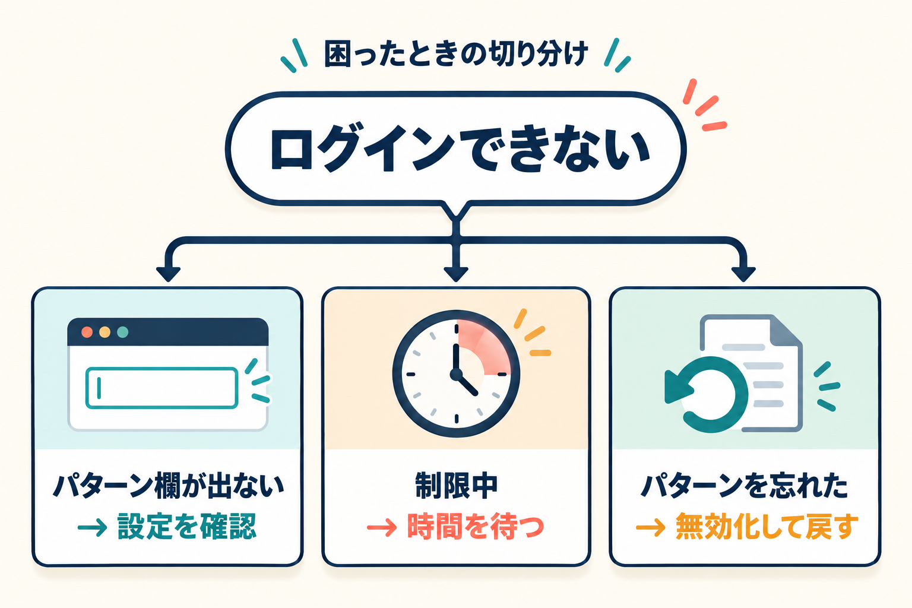

トラブルシューティング
「パターン欄が出ない」「ログインできない」など、うまくいかないときの確認事項をまとめました。

症状から探す
| 症状 | 確認すること | 詳しく |
|---|---|---|
| ログイン画面にパターン欄が出ない | パターンが未設定ではないか／プラグインが有効か | 詳細 |
| 正しいはずなのにログインできない | 制限中ではないか／順番や点の数が合っているか | 詳細 |
| パターンを忘れた／管理画面に入れない | 無効化して標準のログインに戻す | 詳細 |
| パターン欄が操作できない | JavaScript が有効か | 詳細 |
パターン欄が出ない
-
1
管理画面の Kashiwazaki Pattern Lock を開き、「現在の状態」または初期設定画面が出るか確認します。
-
2
初期設定画面が出る場合は、まだパターンが設定されていません。パターンを設定すると、ログイン画面に欄が表示されます。
-
3
管理メニューに項目が無い場合は、プラグインが有効になっているか「プラグイン」一覧で確認します。
ログイン済みの状態では、ログイン画面は表示されません。一度ログアウトすると確認できます。
正しいはずなのにログインできない
画面上部のメッセージを確認してください。
| メッセージ | 意味 | 対処 |
|---|---|---|
| ログインを制限しています。…約 N 分後にもう一度お試しください。 | 失敗が続き、一時的にログインできません。 | 表示された時間が過ぎるまで待ちます。解除の操作はありません。 |
| パターンが正しくありません。… | パターンが設定と違います。 | 選ぶ点・順番を確認して、もう一度入力します。 |
| ユーザー名またはパスワードが違う、というエラー | ユーザー名かパスワードが違います。 | パターンより先に、ユーザー名・パスワードを確認します。 |
- 点をなぞる順番が決められたとおりか。
- 飛び越えた点が自動で選ばれていないか（例: 1 から 3 へなぞると 2 も選ばれます）。
- 4点以上あるか。
パターンを忘れた・管理画面に入れない
パターンを忘れると、管理画面にも入れなくなります。その場合は、プラグインを無効化して標準のログインに戻します。サーバーのファイル管理画面（FTP クライアントなど）で、次の作業をしてください。
-
1
wp-content/plugins/ を開きます。
-
2
wp-plugin-kashiwazaki-pattern-lock フォルダーの名前を、wp-plugin-kashiwazaki-pattern-lock.disabled などに変更します。
-
3
WordPress がこのプラグインを自動的に無効化し、標準のユーザー名・パスワードだけでログインできる状態に戻ります。
-
4
ログイン後、フォルダー名を元に戻して再度有効化し、管理画面でパターンを設定し直してください。
フォルダーを削除しただけでは設定が残ることがあります。再インストールすると、以前のパターンがそのまま戻ることがあります。作り直す場合は、管理画面の「プラグイン」一覧から削除してください。
制限中は、正しいパターンを入力してもログインできません。設定した時間（既定 15 分）が過ぎるまで待つか、上の手順で無効化してください。
パターン欄が操作できない
パターンの入力には JavaScript が必要です。ブラウザーの設定で JavaScript を有効にしてください。無効のままだと、パターンを入力できずログインできません。画面にはその旨の案内が表示されます。
よくある質問
パターンを変えたい
管理画面の「パターンの変更」から変更できます。変更すると全ユーザーが新しいパターンを使うことになるため、利用者への案内が必要です。
設定したパターンはどこで確認できますか
パターンの内容は表示されません。「現在の状態」で、設定済みかどうかと点の数だけ確認できます。忘れた場合は設定し直してください。
何点にすればよいですか
4点以上が設定できます。6点以上をおすすめします。点が多いほど、第三者が言い当てにくくなります。
パターンをやめたい
管理画面の「パターンの解除」で解除できます。全ユーザーのログインが、パターン不要の状態に戻ります。
アプリや外部サービスからはパターンが必要ですか
いいえ。パターンが求められるのは WordPress 標準のログイン画面だけです。アプリ・外部サービスからの接続などは対象外です。
プラグインを無効化するとどうなりますか
パターン入力欄が消え、標準のユーザー名・パスワードだけでログインできる状態に戻ります。設定内容は残るため、再度有効化すると元のパターンが使われます。
複数のユーザーで別々のパターンにできますか
できません。パターンはサイト共通で1つです。すべての利用者が同じパターンを使います。